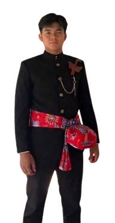

Junior Web Developer · SMK PGRI 2 Ponorogo
SMK PGRI 2 PONOROGO · 2026
Saya adalah seorang Junior Developer yang bersemangat membangun website modern, fungsional, dan responsif. Saat ini saya sedang fokus mempelajari pengembangan aplikasi web Full-Stack, arsitektur backend dengan Laravel, desain antarmuka (UI/UX) yang ramah pengguna, serta pemanfaatan teknologi AI Agent untuk meningkatkan produktivitas dan efisiensi pengembangan perangkat lunak.
SMK PGRI 2 Ponorogo
Open to Work
Internship & Collaboration
AGIT CAP Trainee
Competence Aid Program
Mengenal perjalanan, pola pikir, dan visi saya dalam membangun solusi digital yang bermanfaat.
Halo! Nama saya Naufal Martino Adistama, seorang siswa jurusan Rekayasa Perangkat Lunak (RPL) di SMK PGRI 2 Ponorogo. Ketertarikan saya pada dunia pemrograman berawal dari rasa ingin tahu bagaimana sebuah website dan sistem digital dapat menyederhanakan aktivitas ribuan orang.
Saya tidak hanya mempelajari sintaks kode, tetapi juga memahami arsitektur di baliknya—mulai dari bagaimana data diproses di backend menggunakan PHP & Laravel, bagaimana database MySQL dirancang secara optimal, hingga bagaimana antarmuka pengguna dapat disajikan secara bersih, cepat, dan intuitif.
Di era teknologi modern, saya aktif memanfaatkan AI Agent dan LLM workflow sebagai akselerator riset, debugging, dan eksplorasi ide tanpa mengesampingkan pemahaman fundamental logika pemrograman.
"Menulis kode bukan sekadar membuat program berjalan, melainkan membangun solusi yang terstruktur, mudah dirawat, dan relevan."
Cepat menyerap teknologi baru, dokumentasi resmi framework, serta best practices terkini.
Fokus pada integritas data, relasi normalisasi, indexing B-Tree, dan efisiensi query.
Menerapkan pola MVC rapi, penamaan variabel jelas, dan struktur komponen modular.
Memadukan kapabilitas AI Agent untuk otomasi pengujian, dokumentasi, dan produktivitas tinggi.
Kumpulan keahlian dalam bahasa pemrograman, framework modern, basis data, dan alat produktivitas kerja.
Arsitektur MVC, Eloquent ORM, Blade templating, authentication, middleware, dan RESTful controller.
Relational design, B-Tree Indexing, Stored Procedures, Triggers, Foreign Keys, dan optimasi query.
Desain modern responsif, mobile-first design, layout flexbox/grid, CSS animations, dan semantik web.
Modern ES6+, DOM manipulation, fetch API, asynchronous programming, komponen React, dan hooks.
Jembatan monolitik modern antara Laravel dan frontend SPA, token authentication, dan JSON responses.
Version control (branching, commits, pull requests), XAMPP local environment, dasar container & web server.
Mengeksplorasi ekosistem AI Agent & LLM Orchestration untuk mempercepat penulisan kode, riset algoritma, pembuatan unit test, serta perancangan antarmuka pengguna (UI/UX) yang ramah pengguna.
Antigravity, Claude Code, Gemini CLI, automated workflows.
Figma to responsive Tailwind CSS, clean semantic layout.
Kumpulan aplikasi web dan RESTful API nyata. Klik tombol repositori untuk membuka langsung kode sumber di GitLab atau GitHub.
Tidak ada proyek yang cocok
Coba gunakan kata kunci lain atau klik tombol
Layanan RESTful API Sistem Perpustakaan Digital
Layanan backend API terstruktur untuk sirkulasi buku perpustakaan. Menyediakan endpoint katalog literatur, autentikasi pengguna, pagination data efisien, dan response standar JSON.
Sistem Kasir Penjualan Toko & Manajemen Transaksi
Aplikasi kasir minimarket modern untuk kecepatan transaksi. Menangani pemindaian produk, kalkulasi diskon & kembalian otomatis, serta rekapitulasi data penjualan harian toko.
Sistem Pemesanan & Katalog Produk Bakery Online
Platform katalog dan pemesanan roti online. Menyajikan visual produk roti, sistem keranjang belanja interaktif, kalkulasi total pesanan, serta manajemen stok untuk pemilik toko.
Sistem Informasi & Manajemen Persewaan Kendaraan
Aplikasi manajemen sewa armada mobil. Dilengkapi katalog kendaraan, pengecekan ketersediaan unit mobil realtime, perhitungan durasi & tarif rental, dan pencatatan data penyewa.
Sistem Pengaduan & Aspirasi Warga Berbasis Web
Platform aspirasi dan pengaduan layanan publik. Memfasilitasi masyarakat untuk mengirim laporan kendala lingkungan, upload bukti pendukung, serta melacak status penanganan dari petugas.
Sistem Informasi Administrasi & Demografi Warga Desa
Sistem informasi pendataan warga untuk kantor desa. Mengelola data Kartu Keluarga (KK), pencatatan kelahiran, kematian, mutasi pindah, serta laporan demografi kependudukan otomatis.
Sistem Informasi Manajemen Katalog & Sirkulasi Buku
Aplikasi manajemen buku perpustakaan sekolah. Dilengkapi pencarian koleksi interaktif, kategori literatur, pencatatan peminjaman, serta status ketersediaan stok fisik buku di rak.
Sistem Kasir Ritel Cepat dengan Arsitektur Database Terstruktur
Solusi aplikasi Point-of-Sale lengkap untuk operasional ritel. Menyediakan kalkulasi belanja kilat, manajemen barcode produk, pencatatan riwayat transaksi kasir, dan ringkasan laba.
Perjalanan pendidikan formal kejuruan, sertifikasi kompetensi industri, serta pengalaman magang profesional.
Jurusan Rekayasa Perangkat Lunak (RPL)
Fokus intensif pada pengembangan web Full-Stack, manajemen server, pemodelan database relasional, algoritma komputasi, dan rekayasa perangkat lunak berorientasi objek (OOP).
Peserta Pelatihan Competence Aid Program (CAP)
Terpilih mengikuti program pelatihan teknis terakreditasi dari korporasi teknologi terkemuka PT. AGIT, mengasah keterampilan enterprise IT, kolaborasi tim, dan kesiapan industri digital.
PT Artavel Inovasi Teknologi (Artavel Surabaya)
Menjalani praktik kerja industri nyata di PT Artavel Surabaya. Berperan aktif dalam pengembangan dan pemeliharaan fitur website, pengujian fungsionalitas aplikasi, implementasi antarmuka pengguna yang responsif, serta berkolaborasi langsung bersama tim developer profesional.
Tingkat Menengah Pertama (SMP / MTs)
Menempuh pendidikan tingkat menengah pertama dengan fokus penguatan akademik sains, logika komputasi dasar, serta pembentukan karakter disiplin yang menjadi landasan kuat untuk melanjutkan ke jurusan Rekayasa Perangkat Lunak.
Tingkat Pendidikan Dasar (SD / MI)
Menyelesaikan pendidikan dasar dengan pembekalan nilai-nilai budi pekerti, integritas, pengasahan logika matematika dasar, dan kebiasaan belajar aktif yang melatih rasa ingin tahu terhadap ilmu pengetahuan.
Taman Kanak-Kanak / PAUD
Awal mula perjalanan pendidikan yang menumbuhkan kreativitas, interaksi sosial, pembentukan kepribadian santun, dan semangat belajar bersama di lingkungan Bungkal, Ponorogo.
Isi data di bawah ini, lalu klik tombol untuk membuka obrolan WhatsApp dengan pesan yang sudah terformat rapi.
Email Utama
naufalnazeera22@gmail.comDomisili
Ponorogo, Jawa Timur, Indonesia
Terbuka untuk remote & onsite work
Estimasi waktu respons pesan: 1 - 3 Jam